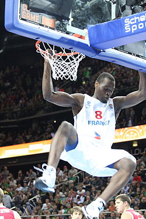

Charles Kahudi

Fiche d’identité
Nationalité : France
Naissance : 19 juillet 1986 (30 ans) Kinshasa, Zaïre
Taille : 1,99 m
Poids : 100 kg
Situation en club
Club actuel : ASVEL Lyon-Villeurbanne
Numéro : 5
Poste : Ailier
Retour